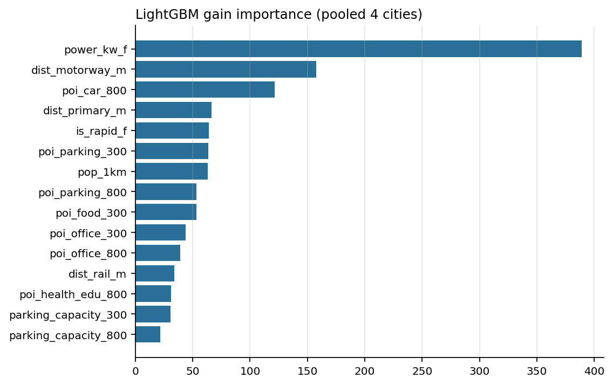

A spatial decision system for EV charging networks under uncertain demand
Where should London's next rapid-charging hubs go, how big should they be, and how sure can we be? Built end-to-end from open data, with every assumption visible.
Marija Ercegovac · geospatial data science · github.com/m-erts/chargescape-london
A hub in the wrong hex idles at 5 % and never pays back; the right one runs above 20–30 % and queues. Industry analyses put break-even at 15–20 % utilisation; payback roughly halves between 10 % and 20 %.
Operators describe site selection as a demand model on dozens to hundreds of factors. Public projects usually predict where chargers already are, ignore queues and cannibalisation, and never say how they could be proven wrong.
Open Charge Map (12.5k points), OpenStreetMap, National Chargepoint Registry 2021, DfT EVCI July 2026
Census 2021 (4,994 LSOAs), DfT vehicle licensing by LSOA (Q1 2026), Indices of Deprivation 2025
OSM POIs (74k), LAEI 2022 road flows incl. taxi & private hire, TfL stations, NaPTAN bus stops
UKPN primary-substation headroom (summer 2026); DFES 2026 EV pathways to 2030
Session logs from Dundee, Perth & Kinross, Palo Alto, Boulder; Optimise Prime; Low Carbon London
Monte Carlo demand draws; literature-informed choice parameters — never presented as observed
28,838 slow + 2,533 rapid chargers (DfT) × TfL-observed occupancy × charging-time share ⇒ ≈ 759 GWh a year.
285 GWh P50 (P10–P90 216–361); rapid-type demand (destination + PHV) ≈ 207 GWh — the same order as the rapid side of the supply estimate.
The band is the honest statement: the two levers are the public-charging share of drivers without a driveway and the size of the electric private-hire fleet.
Hub placed in the hex with the largest unmet demand (Hillingdon); multinomial logit with an outside option, so “new” means demand that would otherwise not use a rapid charger.
Bigger, faster hubs capture more — and cannibalise a larger share. This is the number an investor needs next to “expected sessions”, and it is exactly what a gap map cannot show.

| Spatial | H3 · GeoPandas · Shapely · pyproj | hex grid for siting; areal interpolation from LSOAs |
|---|---|---|
| Network | OSMnx · igraph | many-to-many drive times on a 131k-node graph in seconds, no routing server |
| Statistics & ML | esda · libpysal · LightGBM · scikit-learn | Moran's I, Gi*; spatial cross-validation by default |
| Optimisation | SciPy milp (HiGHS) | sparse capacitated MCLP and exact fixed-plan LPs; linking cuts turned a 20 s time-out into a 5 s optimum; every MIP gap recorded |
| Choice & queues | NumPy | Erlang C, multinomial logit, new vs cannibalised demand — unit-tested against closed forms |
| Delivery | MapLibre GL JS · matplotlib · GitHub Pages | maps that also work offline; this deck |
Expected sessions per day, P10–P90, share taken from neighbours, substation headroom and drive-time catchment for every hex.
Ports and power sized from the queue model against a service level, instead of a fixed template.
Which hubs every demand scenario agrees on (the robust core) and which are interchangeable with neighbours — build the core first, phase the rest.
Choice parameters from real routes, hour-of-day profiles, per-hex uncertainty from sessions, staggered difference-in-differences on openings.
pip install -e .[all] → make models maps slidesMarija Ercegovac · github.com/m-erts